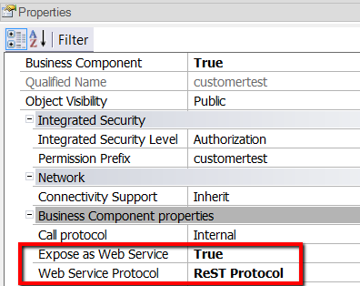

To expose a Business Component (henceforth the BC) as a Rest web service, you only need to do the following configuration at the BC properties:
- Expose as web service = TRUE
- Web Service Protocol = REST Protocol

After generating the BC, it's exposed as a Rest service and it can be consumed using the HTTP protocol (in particular, the HttpClient data type) in GeneXus.
Note that the specification document of this service can be generated automatically. See Documenting RestFul services.
The different CRUD operations of the BC are accessed using different HTTP methods.
- Create: using HTTP POST method.
- Read: using the HTTP GET method.
- Update: using the HTTP PUT method.
- Delete: via the HTTP DELETE method.
The endpoint URI for Business components is
<server uri>/rest/<bc name>
E.g: If "Product" is a BC exposed as Rest, the URI of the service would be: 172.19.12.1/MyApp/rest/Product
If the BC belongs to a module, the endpoint URI is
<server uri>/rest/<module>/<bc name>
For example, if the module is "module2" under "module1", the URI would be: <server uri>/rest/module2/module1/<bc name>.
The parameters have to be separated by commas in the URI.
Depending on the CRUD operations involved, there are some aspects to consider.
| Operation |
URI |
Example |
|
| Create |
<server uri>/rest/<module>/<bc name>/<param1>,<param2>,..,<paramN>.
The parameters have to be sent in the body of the HTTP request. However, the Primary Key has to be sent in the URL.
The format of the URL is the same as in the GET method. The PK values have to be separated by commas.
<server uri>/rest/<module>/<bc name>/<param1>,<param2>,..,<paramN>
|
Method: POST
URI: http://server/baseURL/rest/City/2
Body:
{
"CityName": "Rio de Janeiro",
"CityId": "2"
}
Return: Http code 201
Body:
{
"CityName": "Rio de Janeiro",
"CityId": "2",
"gx_md5_hash": "24258169b5151be175ed72c92fd2c561"
}
|
HowTo: Inserting data using a BC exposed as Rest service
|
|
Read
|
<server uri>/rest/<module>/<bc name>/<param1>,<param2>,..,<paramN>.
The PK values have to be separated by commas.
|
Method: GET
URI http://server/baseURL/rest/City/1
Return: Http code 200
{
"CityName": "Montevideo"
"CityId": "1"
"gx_md5_hash": "24258169b5151be175ed72c92fd2c561"
}
The body contains a hash value, needed for executing an UPDATE.
|
HowTo: Retrieving data from a BC exposed as a Rest service |
| Update |
First get the data by its PK, using the HTTP GET verb and this generic URI:
<server uri>/rest/<module>/<bc name>/<param1>,<param2>,..,<paramN>.
Then update the data using the HTTP PUT verb. Similar to the POST, the PK parameters are included in the query string. The others in the body.
|
Method: PUT
After reading the gx_md5_hash using GET method :
URI http://server/baseURL/rest/City/1
Body:
{
"CityName": "Roma",
"CityId": "1",
"gx_md5_hash": "24258169b5151be175ed72c92fd2c561"
}
Return: Http code 200
|
HowTo: Updating data using a BC exposed as a Rest service |
| Delete |
<server uri>/rest/<module>/<bc name>/<param1>,<param2>,..,<paramN>. |
Method DELETE
URl : http://server/baseURL/rest/City/2
|
HowTo: Deleting data from a BC exposed as a Rest service |
Note: With respect to consuming a Rest service (it can be generated by GeneXus or not), GeneXus provides the [[OpenAPI import tool.
|